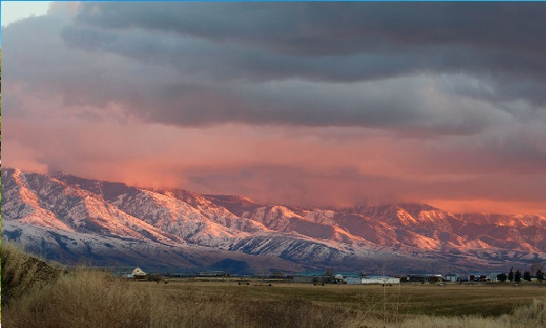

Preston City
Weather Summary
Currently:
High: °F
Wind Speed: mph
Wind Chill:
Humidity: %
Incoming Events
Five Day Forecast
About Preston Idaho
Preston, Idaho is one of the best kept secrets of the West. Nestled on the Idaho side of
beautiful Cache Valley and surrounded by towering mountains on each side, it is unbeatable
for recreation opportunities, has that small town feeling, and is close to whatever you
need. It is one of the safest places to live in the State of Idaho and in Cache Valley.
There’s something for everyone here in Preston, from the arts to the outdoors. We enjoy our
hometown environment. As we grow, we are finding ways of preserving the variety of wildlife
that resides in the mountains, fields and reservoirs around us, the family owned businesses
and the quite neighborhoods. When the weather cools and the trees lining downtown turn color
the whole town begins to buzz in preparation of The Festival of Lights held on the Friday
and Saturday following Thanksgiving. This weekend is filled with shopping, bed racing,
musical and theatrical events, music filled streets, children’s activities, and
Christmas Lights. The night features a lighted parade, fireworks, and a spectacular
turning on of all the lights. The lights will stay up and turned on until the beginning of
the new year. You’ll want to make the Festival of Lights an annual trip to Preston.